4.2 拓扑分析
Multiwfn 能对任何实空间函数做拓扑分析，如电子密度及其 Laplacian 函数、ELF、LOL、轨道波函数、自旋密度、静电势等。可以寻找四种临界点 (critical point, CP) 并轻松获得这些点处的实空间函数值；可生成连接临界点的拓扑路径和流域间面。还有许多附加功能，细节见3.14 节。下面我将给出一些实际应用以说明如何使用这个强大的模块。
注
注意 Multiwfn 不仅能基于波函数文件做拓扑分析，还能基于格点数据做，如 http://sobereva.com/wfnbbs/viewtopic.php?pid=2276 所示。因此，对由实验晶体衍射确定的电子密度做拓扑分析也是可能的。
4.2.1 2-吡哆醇 2-氨基吡啶的分子中的原子 (AIM) 拓扑分析与芳香性分析
电子密度的拓扑分析是 Bader 分子中的原子 (atoms in molecules, AIM) 理论的主要内容。本例对 2-吡哆醇 2-氨基吡啶复合物做这类分析。
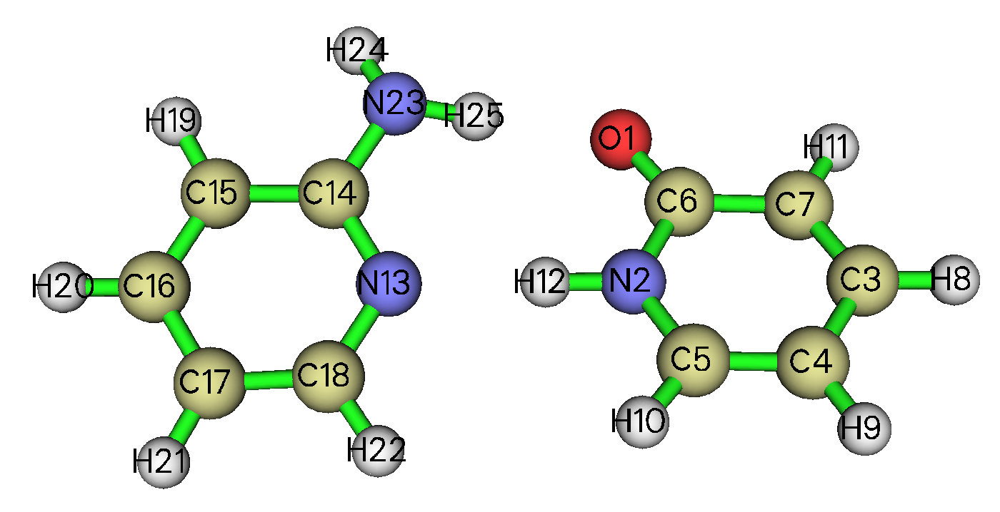
启动 Multiwfn 并输入以下命令
examples\2-pyridoxine_2-aminopyridine.wfn // Assume that the input file is in a subdirectory of current directory, we can only input relative path rather than entire absolute path
2 // Topology analysis然后输入以下命令寻找所有临界点 (CP)
2 // Use nuclear positions as initial guesses, generally used to search (3,-3) CPs
3 // Use midpoint of each atomic pair in turn as initial guesses. Generally all (3,-1) CPs could be found, some (3,+1) or (3,+3) may also be found at the same time寻找 CP 非常快。之后输入 0，所有找到的 CP 的位置和类型会打印在命令行窗口，输出末尾给出每类 CP 的数目：
(3,-3): 25, (3,-1): 27, (3,+1): 3, (3,+3): 0
25 - 27 + 3 - 0 = 1第二行表明 Poincaré-Hopf 关系已满足，意味着所有 CP 可能都已找到。若该关系不满足，则必有 CP 遗漏。从弹出的 GUI 窗口(下图)可以看到所有预期的 CP 都出现了，因此可确认所有 CP 都已找到。
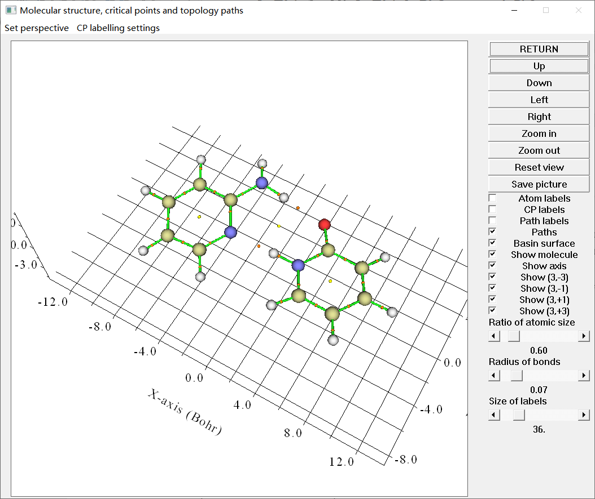
点击 GUI 窗口右上角的“RETURN”按钮并输入 8 生成拓扑路径(当前情形对应“键径”)，再选选项 0 查看 CP 和路径。从命令行窗口现在可直接看到与每个 BCP 相连的两个原子。在 GUI 窗口中稍调绘图设置后，图形如下(若未显示 CP 编号，点击 GUI 右侧的“CP labels”)：
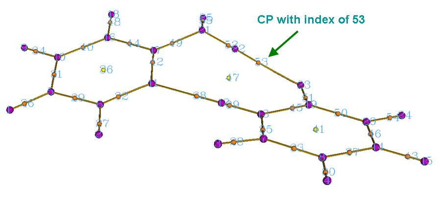
上图中品红、橙、黄小球分别对应 (3,-3)、(3,-1) 和 (3,+1) 临界点，棕色线表示键径。CP 编号用青色文字标注。可见编号 53 和 38 分别对应 N-H⋅⋅⋅⋅O 和 N-H⋅⋅⋅⋅N 氢键 (H 键) 的键临界点 (bond critical point, BCP)。
注
值得注意的是，CP 的标号颜色可经菜单栏“CP labelling settings”下拉列表中的“Set label color”选项改变。若只想标注特定 CP，可在“CP labelling settings”中选“Labelling only one CP”再输入其编号(当体系很大、有大量 CP 时，该选项对清楚可视化或找到感兴趣的 CP 很有用。若在该选项中不输入任何东西，则允许显示所有 CP 标号)。
现在关闭 GUI 窗口。
拓扑分析模块提供许多分析选项；例如，测量 CP30 与 H25 原子核位置之间的距离。选选项 -9，再输入 c30 a25，结果为 5.877601 Å。再测量 C14-N13-H12 的夹角，即输入 a14 a13 a12，结果为 120.297432 度。现在输入 q 返回。
计算氢键结合能
J. Comput. Chem., 40, 2868 (2019) DOI: 10.1002/jcc.26068 是关于氢键的非常重要论文，对广泛氢键体系做了透彻考察和深入分析。在该工作中我与合作者提出了两个极有用、极重要的方程，用于基于对应氢键的 BCP 处的电子密度预测氢键结合能 (binding energy, BE)。
其中 ρ 的单位为 a.u.，BE 的单位为 kcal/mol。已表明这些公式不仅可靠而且普适。第一个方程适用于当前复合物，这里用它预测本体系 N23-H25⋅⋅⋅⋅O1 氢键的 BE。
选选项 7 再输入相应 BCP 的编号，即 53，会看到该点处许多实空间函数的值：
CP Position: 0.44887255865472 3.56434324597741 -0.10652884364257
CP type: (3,-1)
Density of all electrons: 0.3129478049E-01
Density of Alpha electrons: 0.1564739024E-01
Density of Beta electrons: 0.1564739024E-01
Spin density of electrons: 0.0000000000E+00
Lagrangian kinetic energy G(r): 0.2530207716E-01
Hamiltonian kinetic energy K(r): 0.8463666362E-03
Potential energy density V(r): -0.2614844379E-01
Energy density: -0.8463666362E-03
Laplacian of electron density: 0.9782284209E-01
Electron localization function (ELF): 0.1105388527E+00
... (ignored)输出表明该 BCP 处的 ρ(r) 为 0.03129 a.u.，因此氢键 BE 可算为 BE = -223.08*0.03129+0.7423 = -6.2 kcal/mol = -26.1 kJ/mol。
还值得注意的是，在 Chem. Phys. Lett., 285, 170 (1998) 中，Espinosa 等指出对 X-H⋅⋅⋅⋅O (X=C,N,O) 型氢键，BE 可估算为
BE=$V(\mathbf{r}_{\mathrm{BCP}})$/2
如以上输出所示，N23-H25⋅⋅⋅⋅O1 的 BCP 处的 V(r) 为 -0.026148，故 BE 可预测为 -0.026148/2*2625.5 = -34.3 kJ/mol，与用 J. Comput. Chem. (2019) 论文提出的预测方程得到的 -26 kJ/mol 明显不同。哪个更准确？如 J. Comput. Chem. 文章严格证明的，流行的 V(r$_{BCP}$)/2 方程实际上误差明显更大因而不能推荐；换言之，-26.1 kJ/mol 的 BE 应更可靠。
基于临界点性质评估芳香性
这部分用拓扑分析模块的两个特殊选项评估芳香性。若对该话题不感兴趣可跳过。
首先用信息熵方法考察二聚体中的氨基吡啶(上图中左侧单体)能否视为芳香分子。该方法在 Phys. Chem. Chem. Phys., 12, 4742 (2010) 中提出，基于环 BCP 处的电子密度，细节见3.14.6 节。首先选选项“20 Calculate Shannon aromaticity index”，再输入环中 BCP 的编号，即 44,42,32,29,31,40，输出的 Shannon 芳香性指数 (SA) 为 0.000812。SA 指数越小环越芳香。原文中 0.003 < SA < 0.005 选作芳香性/反芳香性的分界。由于我们的结果远小于 0.003，可得出氨基吡啶是芳香分子的结论。2-吡哆醇(上图中右侧单体)的 SA 为 0.000865，故芳香性略弱于氨基吡啶。
接下来计算环临界点 (RCP) 处垂直于环平面的电子密度曲率。在 Can. J. Chem., 75, 1174 (1997) 中表明更负的曲率意味着更强的芳香性。先算氨基吡啶的曲率。选选项“21 Calculate gradient and curvature of electron density along a given direction”，输入 RCP 的编号(即 36)，选模式 2，再输入至少三个原子以拟合环平面，这里输入 15,13,17。从输出可知曲率为 -0.0187 a.u.。再算 2-吡哆醇的曲率 (CP41，用原子 2、7、4 定义平面)，结果为 -0.0164 a.u.。两曲率的比较再次表明氨基吡啶芳香性更强。在 Multiwfn 中芳香性还可用许多其他方案度量，如 HOMA、FLU、PDI、ELF-π 和多中心键级，它们在4.A.3 节中共同讨论。
生成流域间面
流域间面 (interbasin surface, IBS) 把整个分子空间切分为各自流域，每个 IBS 实际是从 (3,-1) CP 发出的一束梯度径。现在生成对应编号 53、38 和 37 的 (3,-1) 的 IBS。选功能 10，输入
53 // Generate the IBS corresponding to the (3,-1) CP with index of 33, the same as below. You may need to wait a few seconds for each generation of IBS
38
37
q // Return选功能 0 可视化结果，图形如下。三个面即 IBS。
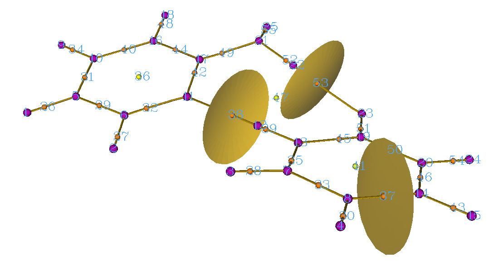
在4.20.1 节将用另一种重要弱相互作用分析方法 NCI 进一步研究该体系。
你可能觉得当前 Multiwfn 显示 CP 和拓扑路径的 GUI 对大体系用起来有点困难，因为体系不能完全平滑旋转，有时感兴趣 CP 的编号难以看清。在4.2.5 节我将介绍如何基于 Multiwfn 输出用强大的 VMD 程序非常轻松地绘制 CP 和拓扑路径，此时图形非常漂亮，视角完全可控，感兴趣 CP 的编号很容易找到。
关于 AIM 拓扑分析还有两点我想提一下，虽然与当前例子无关。
若电子密度的某些临界点没有成功找到怎么办？
对小体系，通常只需进入 GUI 可视化 CP 分布即可检查是否所有 CP 都已找到。还有个有用的方程叫 Poincaré-Hopf 关系。对孤立体系，该关系为
若所有 CP 都已找到，该关系必满足，但满足该关系不一定意味着所有 CP 都已找到。若 Poincaré-Hopf 关系不满足，则必有 CP 遗漏。
有时搜索后会发现一些预期的 CP 没有成功找到。有两个原因可能导致该问题：(1) 初始猜测位置离 CP 不够近。(2) 默认 CP 搜索参数不适合当前情形。下面是一些常用解决方法，更详细描述见3.14.2 节。
a) 若已试过选项 2~5 仍有 CP 未找到，试用选项 6 的子选项 -1。该搜索模式强大但昂贵，默认在每个原子周围球形区域内放 1000 个起始点。若重复该模式几次后缺失的 CP 仍找不到，很可能是搜索参数不合适而非起始点位置的原因。
b) 若一些 BCP 找不到，可进入选项 -1，把步长缩放因子设为 0.5，再试一次
c) 很重原子的 NCP 很难找到，因为此时原子核处电子密度峰非常尖，在默认参数下搜索算法很难捕捉到 NCP。为找到它们，可进入选项 -1，把梯度模和位移收敛标准放宽几个数量级，再用选项 2 重新搜索 NCP。若随后成功找到 NCP，别忘了恢复原来的收敛标准。实际上，由于重原子的 NCP 几乎恰位于原子核位置，也可直接进入选项 -4 选子选项 3 在相应原子核位置手动添加 NCP。
d) 若缺失的 CP 预期出现在远离原子的地方，例如非常大笼或管体系中心的 CCP，请进入选项 -1，用子选项 8 把判断 Hessian 矩阵奇异性的标准收紧几个数量级，再重新搜索 CP。
顺便一提，极少数情况下会发现几个 CP 出现在远离体系的意外区域，它们应是数值噪声造成的人为 CP。避免找到它们的有用方法是进入选项 -1 选子选项 8，把标准增大几个数量级(如增至 1E-15)再像往常一样搜索 CP。
关于很重原子的电子密度描述
很重原子(重于 Kr)比轻原子带来大得多的计算负担，且相对论效应不可忽略。有两种不同方法描述它们。
用赝势 (pseudopotential, PS)：如2.5 节所述，若用 PS 但输入文件是用 Gaussian 产生的 .wfx 文件，.wfx 文件中的 EDF (electron density functions) 场默认载入 Multiwfn，它代表内核电子密度。对其他类型输入文件，如 .mwfn、.wfn、.fch、.molden 和 .gms，默认 Multiwfn 从内置 EDF 库自动载入合适的 EDF 信息。
提供 EDF 信息时，电子密度的所有 CP 都能被正确找到且绝不会出现人为 CP，从 BCP 发出的键径能正常连接到 NCP，所有仅基于电子密度的 CP 性质都合理。这种情况下用大核 PS 也没问题，但我仍推荐用小核 PS，因为所得 CP 位置和性质的精度必定比用大核 PS 好。
Lanl1 Lanl2, Lan2TZ/08 SDD cc-pVnZ-PP, def2 series SBKJC Main groups Large Large L/S (optional) Small Large Transition metals Large Small L/S (optional) Small Small 若决定不用 EDF 信息(settings.ini 中 "readEDF" 和 "isupplyEDF" 详述)，显然不可能在原子核位置找到 (3,-3) CP，相应地，从 BCP 发出的键径无法连接到原子核。反而可能因内核密度缺失在原子核位置找到 (3,+3)，且原子核周围出现大量不同类型的 CP，这是因为电子密度不再从原子核呈指数衰减，电子密度的拓扑结构变得相当复杂。但可直接忽略那些无关 CP，只关注真正感兴趣的 BCP。
用相对论哈密顿的全电子基组：这是描述重原子电子结构最昂贵但最准确的方案。对 AIM 分析只考虑标量相对论效应完全足够。DKH2 哈密顿是很好的选择 (在 Gaussian 中只需用 int=DKH2 关键词采用，但注意必须用对 DK 计算优化的基组，如 cc-pVDZ-DK)。
更多讨论请参阅我的博客文章“赝势下做波函数分析的一些说明”(中文，http://sobereva.com/156)。
4.2.2 乙酸的定域轨道指示剂 (LOL) 拓扑分析
2.6 节已简介定域轨道指示剂 (localized orbital locator, LOL)。本例寻找乙酸 LOL 的临界点并生成 LOL 的拓扑路径。用完全相同的步骤，也可研究许多其他实空间函数的拓扑特征，如电子定域化函数 (ELF)、静电势 (ESP) 和电子密度的 Laplacian。
启动 Multiwfn 并输入以下命令
examples\acetic_acid.wfn
2 // Enter topology analysis module
-11 // Select a real space function
10 // Localized orbital locator (LOL)注意 LOL 的分布特征比电子密度复杂得多，所以很难找到所有 LOL 的 CP。幸运的是，一般我们感兴趣的只是 LOL 的 CP 的一小部分，一旦找到感兴趣的所有 CP 即可中止搜索。
先用选项“2 Search CPs from nuclear positions”寻找非常靠近原子核的 CP。但其他区域 CP 的位置有些不可预测，因而要在每个原子周围随机撒大量起始点尝试寻找那些 CP。现在输入以下命令：
6 // In this searching mode, starting points will be randomly scattered within a spherical region, the sphere center, radius, number of points and so on can be defined by users. This time we leave the default value unchanged
-1 // Use each nucleus as sphere center in turn to search CPs. Since there are 8 atoms, and starting points in each sphere is 1000, Multiwfn will try to search CPs based on 8*1000 starting points. Of course, the more the starting points you set, the larger probability that all CPs could be found in this search, but the higher the computational cost
-9 // Return to upper menu
0 // Visualize the result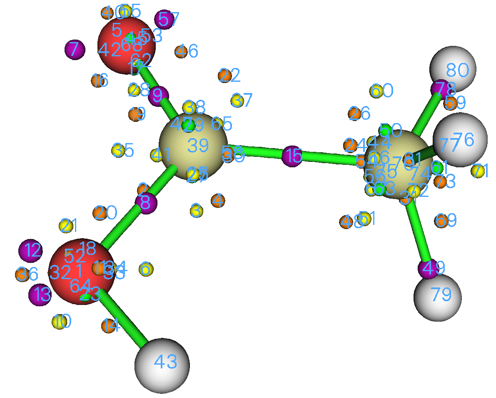
从上图可见 LOL 的 CP 数目非常多。实际上搜索中仍有一些 CP 没找到。若再重复搜索一次，可能找到一些缺失的 CP。由于目前感兴趣的所有 CP 都已找到，没必要重复搜索。图中每个紫色小球表示 (3,-3) 型 CP，代表电子定域的局域极大。可见 CP15 刻画两碳间的共价键。CP8 和 CP9 对应两个 C-O 键。CP7、57、12 和 13 对应氧的孤对电子。
注
注意用选项 6 找到的 CP 的编号每次都不同，因为起始点的分布完全随机。
现在选选项 8 生成连接 (3,-1) 和 (3,-3) CP 的拓扑路径，再选选项 0 重新可视化结果。为减轻视觉负担，可适当调整相应 GUI 控件关闭一些不感兴趣对象的显示。从下图可见拓扑路径阐明了 CP 间的内在连接。
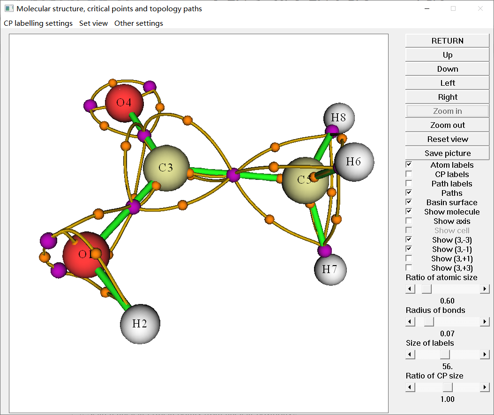
提示：用最速上升算法寻找极大的例子
对 LOL 和 ELF，通常真正感兴趣的是它们的 (3,-3) CP，即极大。默认 CP 搜索方法是 Newton，能找各类 CP，如上所示。值得注意的是 Multiwfn 还支持其他搜索算法，其中最速上升专用于寻找极大。例如，这里用它寻找乙酸的 ELF 极大。启动 Multiwfn 并输入
examples\acetic_acid.wfn
2 // Enter topology analysis module
-11 // Select a real space function
9 // ELF
-1 // Set CP searching parameters
12 // Choose searching algorithm
3 // Steepest ascent
0 // Return
6 // Search CPs from a batch of points within sphere(s)
-1 // Start the search using each nucleus as sphere center in turn
-9 // Return
0 // Visualize result适当调整绘图设置后，可清楚看到 ELF 的极大：
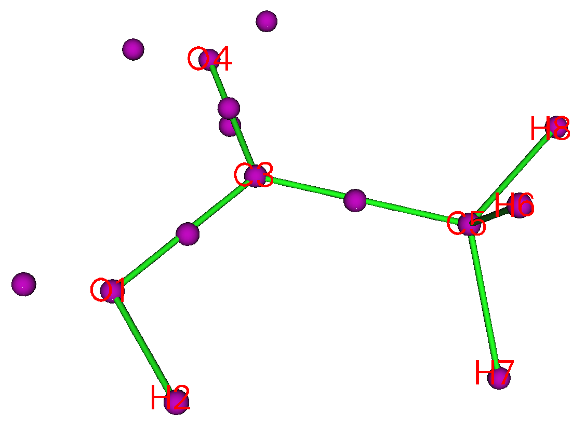
ELF 极大与 LOL 极大的分布非常相似，但也有一些明显差别。有两个 LOL 极大代表 O1 的孤对电子，而相应区域只有一个 ELF 极小。此外，LOL 用一个极大表示 C3-O4 相互作用，而 ELF 图中有两个。
4.2.3 沿键径绘制实空间函数
Multiwfn 支持的所有实空间函数都可轻松沿拓扑路径绘制。本例沿丁二烯边界 C-C 键的键径绘制电子密度的椭率。
先打开 settings.ini 文件把 "iuserfunc" 参数改为 30，因为第 30 个用户自定义函数对应电子密度椭率，细节见2.7 节。
然后启动 Multiwfn 并输入以下命令：
examples\butadiene.fch
2 // Topology analysis
2 // Search nuclear critical points from nuclear positions
3 // Search bond critical points from midpoint of atomic pairs
8 // Generate bond path
0 // Enter GUI window to visualize result点击 GUI 窗口右侧的“Atom labels”和“Path labels”按钮，可发现路径 5 和 6 共同构成边界 C-C 键的键径：
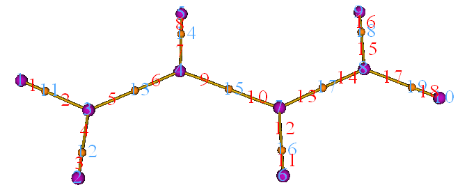
点击“RETURN”关闭窗口再输入
-5 // Various operations on paths
7 // Calculate and plot a specific real space function along a path
5,6 // The index of the paths (in fact, you can also equivalently input c13 here)
100 // User-defined function, which corresponds to ellipticity of electron density currently会看到：
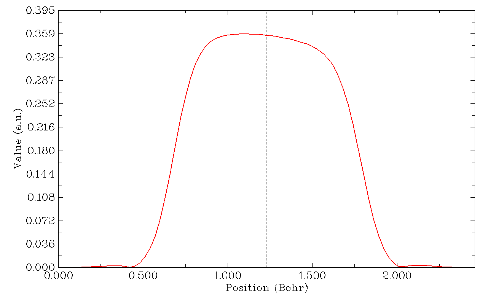
沿边界 C-C 键键径的电子密度椭率曲线立即显示在屏幕上，虚线表示键临界点的位置。图中左右角分别对应 CP3 和 CP4。同时曲线的原始数据展示在命令行窗口，可拷贝出来，以便在 Origin 等第三方绘图工具中进一步分析或重绘。
从图清楚可见电子密度椭率在键径中部区域为正，表现该 C-C 键的双键特征。
也可沿键径绘制 ELF、动能密度等其他实空间函数，请一试。
4.2.4 把临界点处的性质分解为轨道贡献
许多实空间函数可精确或近似分解为轨道贡献。若除轨道 i 外所有轨道占据数设为零，则算出的函数值恰对应轨道 i 的贡献。
Multiwfn 能把任何实空间函数在任何点分解为轨道贡献，主功能 1 和主功能 2 都支持该功能；前者点的坐标可由用户直接输入，后者点可选为找到的 CP 之一。本节以 1,3-丁二烯为例说明该功能。
先查看哪些分子轨道对边界 C-C 键对应 BCP 有明显贡献。启动 Multiwfn 并输入
examples\butadiene.fch
2 // Topology analysis
2 // Search nuclear critical points
3 // Search BCPs
0 // Visualize CPs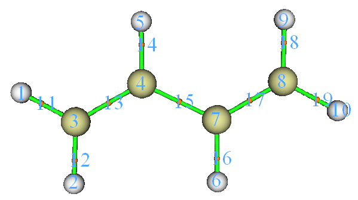
可见 CP13 和 CP17 是边界 C-C 键的 BCP。关闭 GUI 再输入
7 // Show properties at a CP
13d // Decompose properties of CP13
1 // The real space function to be decomposed is electron density
[Press ENTER button] // Take all occupied orbitals into account, but only print ten orbitals having largest contributions会看到以下输出
Contribution from orbital 11 (occ= 2.000000): 0.107469 a.u. ( 31.34% )
Contribution from orbital 6 (occ= 2.000000): 0.085220 a.u. ( 24.85% )
Contribution from orbital 9 (occ= 2.000000): 0.061997 a.u. ( 18.08% )
Contribution from orbital 5 (occ= 2.000000): 0.059119 a.u. ( 17.24% )
Contribution from orbital 12 (occ= 2.000000): 0.011205 a.u. ( 3.27% )
Contribution from orbital 10 (occ= 2.000000): 0.008898 a.u. ( 2.60% )
Contribution from orbital 7 (occ= 2.000000): 0.004864 a.u. ( 1.42% )
Contribution from orbital 8 (occ= 2.000000): 0.003807 a.u. ( 1.11% )
Contribution from orbital 2 (occ= 2.000000): 0.000070 a.u. ( 0.02% )
Contribution from orbital 1 (occ= 2.000000): 0.000070 a.u. ( 0.02% )
Sum of above values: 0.34286855 a.u. ( 100.00% )
Exact value: 0.34286855 a.u.显然该 BCP 处的电子密度由许多分子轨道共同贡献，最大贡献为 31.3%。若把分子轨道转化为定域轨道 (LMO) 会怎样？(轨道定域化和 LMO 的介绍见3.21 节)。为考察，回到主功能菜单，再输入
19 // Orbital localization
1 // Only localize occupied orbitals
2 // Enter topology analysis function again. We do not need to redo topology analysis, since all topology information is retained when you exit topology analysis module
7 // Show properties at a CP
13d // Decompose properties of CP13
1 // The real space function to be decomposed is electron density
[Press ENTER button]会看到
Contribution from orbital 11 (occ= 2.000000): 0.339266 a.u. ( 98.95% )
Contribution from orbital 6 (occ= 2.000000): 0.001072 a.u. ( 0.31% )
Contribution from orbital 7 (occ= 2.000000): 0.000630 a.u. ( 0.18% )
...[ignored]
Sum of above values: 0.34286855 a.u. ( 100.00% )
Exact value: 0.34286855 a.u.可见目前只有一个轨道即 LMO11 对该 BCP 有显著贡献。这正是我们预期的，因为在 LMO 框架下，每个化学键通常主要只由一个或很少几个 LMO 代表。可用主功能 0 可视化 LMO11：
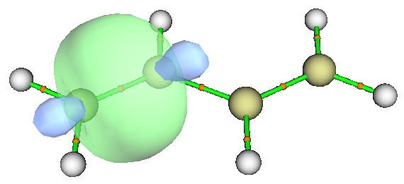
清楚看到 LMO11 完全对应边界 C-C σ 键，这就是为什么相应 BCP 的电子密度等性质完全由 LMO11 主导。
接下来查看边界 C-C 键对应 BCP 上方 1 Bohr 的点有哪些 LMO 有不可忽略的贡献。BCP 编号为 13，选选项 0 时可在控制台窗口找到它的坐标：
Index XYZ Coordinate (Bohr) Type
...[ignored]
11 -2.227945085 -3.985434919 0.000000000 (3,-1)
12 -0.041512516 -3.979859852 0.000000000 (3,-1)
13 -1.131478160 -2.047305989 0.000000000 (3,-1)
...[ignored]显然 CP13 上方 1 Bohr 的点应为 (-1.131,-2.047,1.0)。输入以下命令
-10 // Return to main menu
1 // Print various properties at a given point
d // Decompose to orbital contributions
-1.131,-2.047,1.0
1 // The unit of inputted coordinate is Bohr
1 // Decompose electron density
[Press ENTER button]会看到以下信息
Contribution from orbital 11 (occ= 2.000000): 0.110266 a.u. ( 66.33% )
Contribution from orbital 15 (occ= 2.000000): 0.055354 a.u. ( 33.30% )
Contribution from orbital 1 (occ= 2.000000): 0.000215 a.u. ( 0.13% )
...[ignored]
Exact value: 0.16623908 a.u.可见不仅 LMO11，LMO15 也有明显贡献。若在主功能 0 中查看该轨道，会发现它对应边界 C-C 键的 π 键。
用类似方法，再分解中间 C-C 键对应 BCP 上方 1 Bohr 的点的电子密度，结果为
Contribution from orbital 13 (occ= 2.000000): 0.097450 a.u. ( 78.20% )
Contribution from orbital 14 (occ= 2.000000): 0.013348 a.u. ( 10.71% )
Contribution from orbital 15 (occ= 2.000000): 0.013348 a.u. ( 10.71% )
...[others are not shown due to negligible contribution]
Exact value: 0.12461415 a.u.三个 LMO 的等值面图如下。
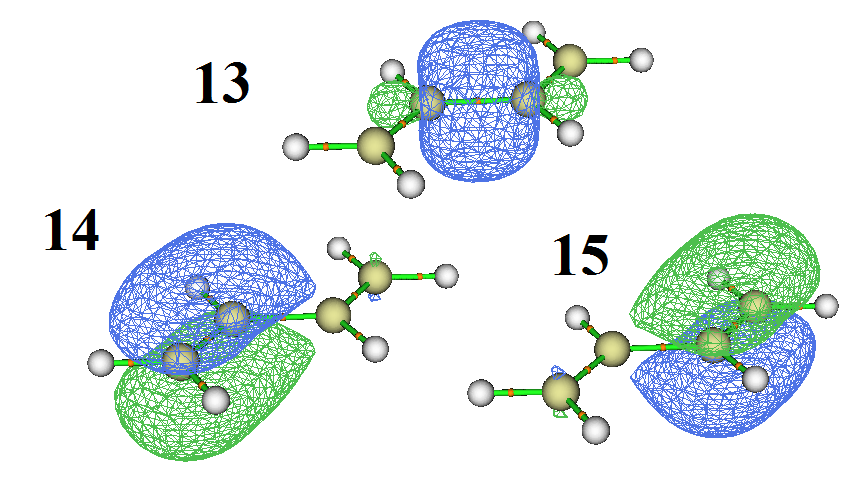
虽然 LMO 14 和 LMO 15 主要对应边缘 C-C 键的 π 键，但它们对中间 C-C 键上方 1Å 位置有 10.7% 的贡献，意味着中间 C-C 键必定也有 π 特征，只是比边界 C-C 键弱得多。
4.2.5 基于 Multiwfn 输出在 VMD 可视化程序中轻松绘制高质量 AIM 拓扑图
注 1
本教程的中文版是我的博客文章“使用 Multiwfn+VMD 快速绘制高质量 AIM 拓扑分析图”(http://sobereva.com/445)。
注 2
本节有对应的视频演示：https://youtu.be/mgsnhvWH5SI。强烈建议看一看！！！！！！！！！！！！
在4.2.1 节我已展示如何对 2-吡哆醇 2-氨基吡啶复合物做 AIM 拓扑分析，本节将展示如何非常轻松地在强大且免费的 VMD 程序 (http://www.ks.uiuc.edu/Research/vmd/) 中渲染找到的 CP 和生成的拓扑路径。图形非常漂亮，且可轻松找到感兴趣 CP 的编号。整个过程高度自动化，因为基于预先提供的 Windows 批处理文件和 VMD 绘图脚本。若不知如何在静默模式运行 Multiwfn，强烈建议先读5.2 节，以便充分理解批处理文件的工作方式。若手动写类似 shell 脚本，该方法在 Linux 平台也可实现。
脚本文件
先做一些准备。把 "examples\scripts" 中的 AIM.bat 和 AIM.txt 拷贝到含 Multiwfn 可执行文件的文件夹。编辑 AIM.bat，把默认 VMD 文件夹改为你机器上的实际 VMD 文件夹。再把 VMD 绘图脚本 AIM.vmd 拷贝到 VMD 文件夹，并在 VMD 文件夹的 vmd.rc 文件末尾加上 proc aim {} {source AIM.vmd}，这样以后只需在 VMD 中输入命令 aim 即可激活该脚本。
注
AIM.txt 是在静默模式运行 Multiwfn 的输入流文件，它做以下事情：
(1) 做标准 AIM 分析(依次用选项 2、3、4、5 寻找 CP 并生成拓扑路径)
(2) 把 CP 和路径导出为当前目录下的 CPs.pdb 和 paths.pdb
(3) 计算所有找到的 CP 处除 ESP 外的所有性质并把结果导出到当前目录下的 CPprop.txt
(4) 把当前体系的结构导出为当前目录下的 mol.pdb
若想降低 VMD.bat 的计算代价，可删去 VMD.txt 的第四、五行，此时 Multiwfn 只尝试从原子核位置和原子对中点出发寻找 CP。但该处理可能遗漏一些 CP。
例子：2-pyridoxine_2-aminopyridine
本例把 examples\2-pyridoxine_2-aminopyridine.wfn 拷贝到含 Multiwfn 可执行文件的文件夹，把 VMD.bat 中的输入文件名改为 2-pyridoxine_2-aminopyridine.wfn，再双击 VMD.bat，该批处理文件会调用 Multiwfn 按 VMD.txt 中的命令对该 .wfn 文件做分析。过一会儿，该目录下生成 CPprop.txt，同时生成的 mol.pdb、CPs.pdb 和 paths.pdb 被自动移到 VMD 文件夹。
现在启动 VMD 并在 VMD 控制台窗口输入命令 aim，会立即看到下图。
注
注意为获得稍好的效果，我用了内置 Tachyon 渲染得到下图，即选“File”-“Render”，改为“Tachyon (internal, in-memory rendering)”并点击“Start Rendering”按钮(所得文件为 .tga 格式，需用高级图片浏览器查看，如 IrfanView，免费见 https://www.irfanview.com)
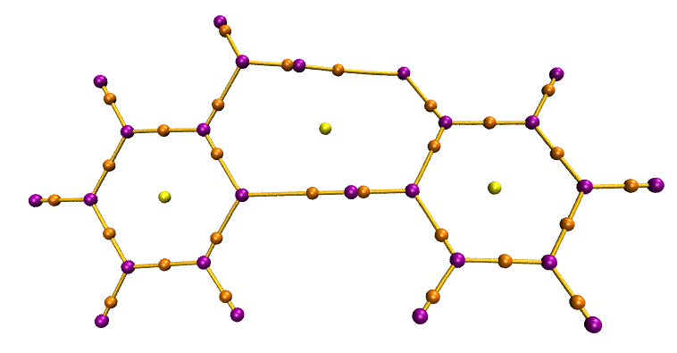
也可在图上同时显示分子结构。双击下图截屏中的“D”使其变黑：
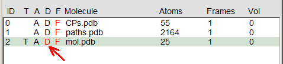
分子结构会显示出来：
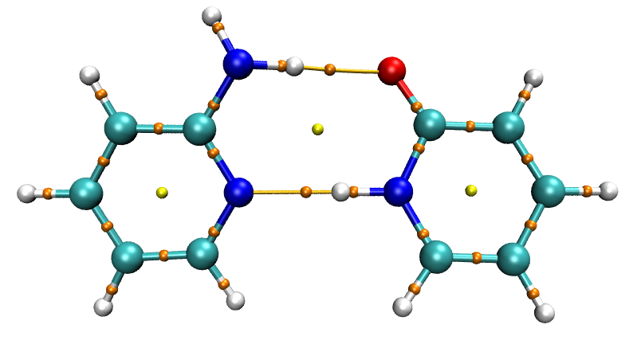
给临界点加标号
CP 编号可轻松标注在图上。AIM.vmd 脚本定义了名为 labcp 的命令，用法为：
labcp [type] [label size] [offset in X] [offset in Y]“type”可以是“all”、“no”、“3n3”、“3n1”、“3p1”、“3p3”。“offset in X”和“offset in Y”用于定义标号的位置偏移，默认分别为 -0.1 和 0.0。
例子：
labcp all: Labelling index of all CPs
labcp no: Removing all CP labels
labcp 3n1 1.3: Labelling all (3,-1) CPs with size of 1.3
labcp 3p3 1.8 -0.05 0.1: Labelling all (3,+3) CPs with size of 1.8, the position offset in X and Y are set to -0.05 and 0.1, respectively对当前体系，在 VMD 控制台窗口输入 labcp 3n1 1.5 -0.1 0.1，会看到
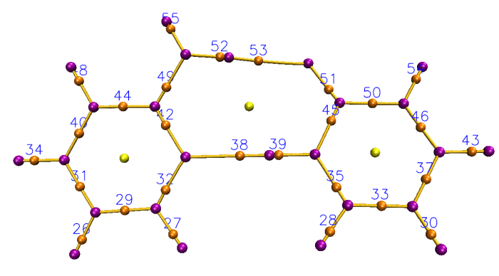
上图的标号与 CPprop.txt 中的一一对应。例如标号 38 的 CP 恰对应 CPprop.txt 中的 CP 38。显然可通过查 CPprop.txt 中的相应条目轻松考察各 CP 的性质。
此外，AIM.vmd 还定义了 labcpidx 命令按编号标注特定 CP。例如可用 labcpidx "2 7 to 10 14" 只标注 CP 2、7、8、9、10、14，还可在编号后加 [label size] [offset in X] [offset in Y] 选项。
显示特定临界点
若想隐藏某些类型的 CP，应进入“Graphics”-“Representations”，再把“Selected Molecule”切换到“CPs.pdb”，如下所示。
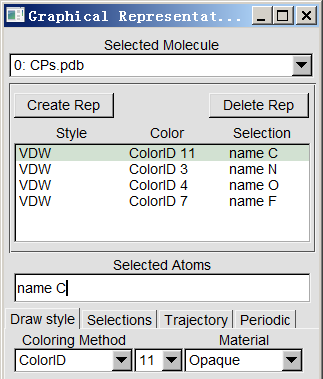
由于在 CPs.pdb 中，C、N、O、F 原子分别用于代表 (3,-3)、(3,-1)、(3,+1)、(3,+3) CP，若想在图中隐藏 (3,+1) 和 (3,+3)，可双击“name O”和“name F”条目使其不可见。
此外，例如在所有 (3,-1) CP 中只想显示编号 3、5、6、7、11 的，可选中“name N”条目，再在“Selected Atoms”框输入 name N and serial 3 5 to 7 11 并按回车。而若想隐藏那些 CP，应输入 name N and not {serial 3 5 to 7 11}。显然 VMD 的选择非常灵活。
显示特定拓扑路径
也可选择性显示拓扑路径。从 paths.pdb 的内容可知每条路径对应唯一的残基编号，所以可用 VMD 的“resid”属性选择哪些路径可见或不可见。例如，若想隐藏拓扑路径 3 和 7，应进入“Graphics”-“Representations”面板，从“Selected Molecule”下拉框选“paths.pdb”，再在“Selected Atoms”框输入 not resid 3 7。
若想查询拓扑路径的编号，应激活 VMD 图形窗口，按“0”键进入查询模式，再在图形窗口点击一条路径，控制台窗口显示的“resid:”即为路径编号。若想回到旋转模式，应按“r”键。
4.2.6 特殊方式的拓扑分析：以 G-C...G-C 碱基对为例
得益于 Multiwfn 极灵活的设计，可以只在真正感兴趣的某些区域内或特定区域之间做拓扑分析，从而显著降低总代价同时避免不需要的 CP。本节以下图所示 G-C...G-C 碱基对为例。该体系可视为由四个片段组成。它的 .wfn 文件可直接在 http://sobereva.com/multiwfn/extrafiles/GCGC.zip 下载。
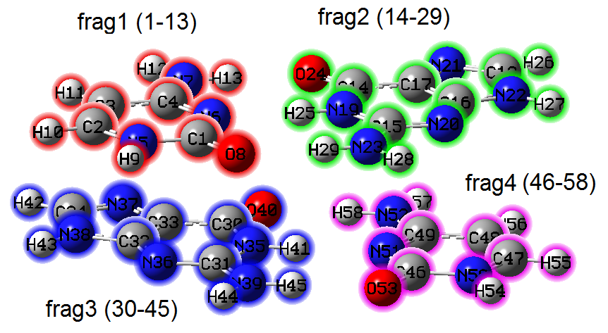
(1) 只在弱相互作用区做 AIM 分析
首先展示如何只在弱相互作用区寻找 CP 并生成键径，那里电子密度必定相对较低。启动 Multiwfn 并输入
GCGC.wfn
2 // Topology analysis
2 // Search CPs from nuclear positions
-1 // Set CP searching parameters
9 // Set value range for reserving CPs:
0,0.1 // Only CPs with density within 0~0.1 a.u. (i.e. relatively low density) will be reserved during searching
0 // Return
3 // Search CPs from midpoint of atomic pairs
8 // Generating the paths connecting (3,-3) and (3,-1) CPs现在选选项 0 可视化结果，见下。左右两图实际相同，只是右图隐藏了分子结构。清楚看到只生成了对应弱相互作用的 BCP 及伴随的键径，而对应化学键的 BCP 和键径没有得到。
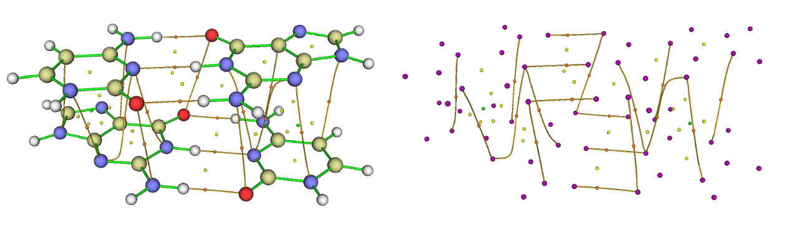
若对 RCP (ring CP，黄色小球) 和 CCP (cage CP，绿色小球) 不感兴趣，可轻松删去。输入以下命令：
-4 // Modify or export CPs
2 // Delete some CPs
5 // Delete all (3,+1) CPs
6 // Delete all (3,+3) CPs
0 // Return
0 // Return再选选项 0 可视化结果，会发现 RCP 和 CCP 已消失。
(2) 只在局域空间区域做 AIM 分析
现在说明如何只对片段 1 和 2 做 AIM 拓扑分析。启动 Multiwfn 并输入
GCGC.wfn
2 // Topology analysis
-1 // Set CP searching parameters
10 // Set the range of the atoms considered in searching modes 2, 3, 4, 5
1 // Confine the searching within a fragment
1-29 // The atomic index range of fragments 1 and 2
2 // Set scale factor of stepsize. We modify this because under default setting some BCPs corresponding to C-H and N-H of present system may be missing
0.5 // Stepsize will be scaled by 0.5
0 // Return
2 // Search CPs from nuclear positions
3 // Search CPs from midpoint of atomic pairs
8 // Generating the paths connecting (3,-3) and (3,-1) CPs选选项 0 可视化结果，会看到下图。显然只生成了与片段 1 和 2 相关的 CP 和键径，这正是我们预期的。
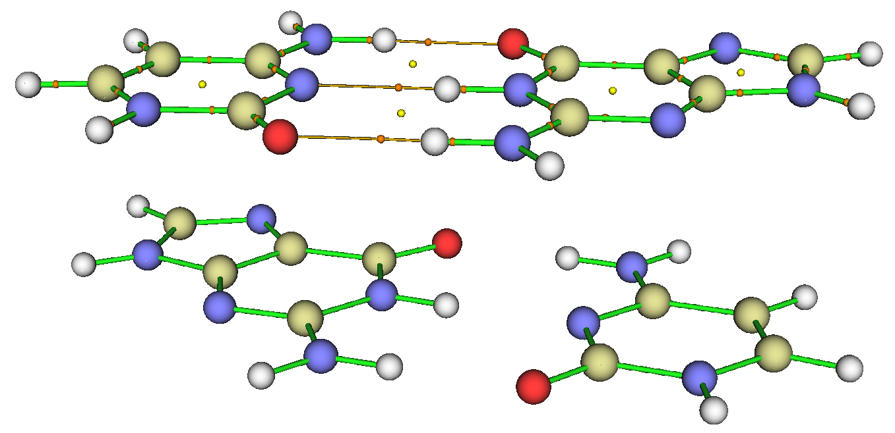
(3) 只保留连接两个特定片段的键径和相应 BCP
有时只想研究两个特定片段间的片段间相互作用，希望把所有无关键径和 BCP 完全删去使图形更清楚。虽然可经选项 -1 和 -2 中的相应子选项手动删除不需要的 BCP 和键径，但过程通常繁琐。幸运的是 Multiwfn 有实现该目的的特殊选项。下面说明如何只保留连接片段 1 和 3 的键径和相应 BCP，同时删去所有其他 BCP 和键径。
启动 Multiwfn 并输入
GCGC.wfn
2 // Topology analysis
2 // Search CPs from nuclear positions
3 // Search CPs from midpoint of atomic pairs
8 // Generating the paths connecting (3,-3) and (3,-1) CPs
-5 // Manipulate paths
8 // Only retain bond paths (and corresponding BCPs) connecting two specific fragments while delete all other bond paths and BCPs
1-13 // Atomic indices in fragment 1
30-45 // Atomic indices in fragment 3
y // Also delete BCPs in other bond paths再如上所述手动删除所有 (3,+1) 和 (3,+3) CP，再可视化结果，会看到
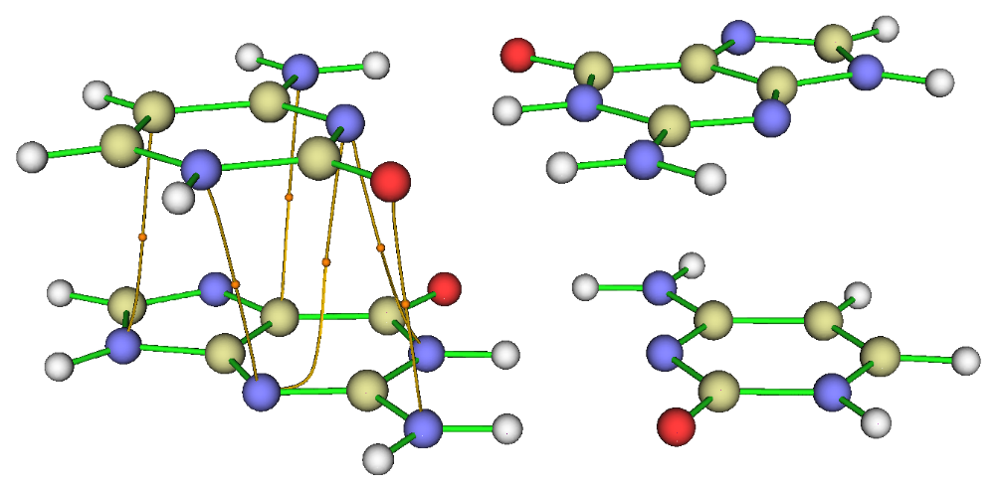
显然只保留了表征片段 1 和 3 间堆积相互作用的 BCP 和键径，图形非常清楚，这正是想要的。
(4) 只在两个特定片段之间寻找临界点
若只对两个很大分子间的分子间相互作用感兴趣，且发现搜索所有 CP 的代价很高，可让 Multiwfn 只在两分子之间寻找 CP，如本例所示。我们只尝试寻找 GCGC 复合物片段 1 和 3 之间的 CP。启动 Multiwfn 并输入
GCGC.wfn
2 // Topology analysis
-1 // Set CP searching parameters
10 // Set the range of the atoms considered in searching modes 2, 3, 4, 5
2 // Searching CPs between two specific regions
1-13 // The atoms in region 1
30-45 // The atoms in region 2
0 // Return
3 // Search CPs from midpoint of atomic pairs
4 // Search CPs from center of three atom atoms现在选选项 0 可视化结果，会看到
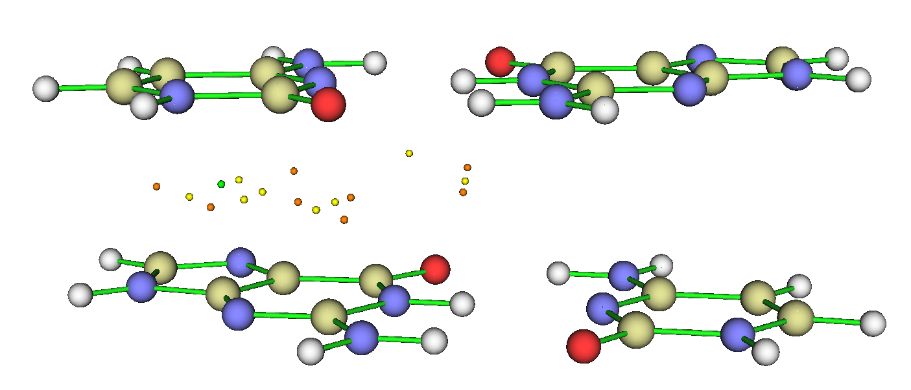
由于每次搜索涉及的原子组合要求同时出现在定义的两个区域(即所有原子不能出现在同一区域)，尝试次数比搜索整个复合物的 CP 大幅减少，代价相应显著降低。可见最终找到的 CP 大多出现在片段 1 和 3 之间，虽有少数收敛到片段 1 和 2 之间的区域，可再手动删去。
4.2.7 经由细化流域分析找到的吸引子做拓扑分析：以双自由基自旋密度为例
拓扑分析模块能精确定位各类 CP，但若实空间函数分布相对复杂，如 ELF、轨道波函数和密度差，通常很难找到所有 CP。相比之下，流域分析模块保证能成功找到负值区的所有极小和正值区的所有极大，它们统称“吸引子”，见4.17 节的例子。但由于流域分析基于均匀分布的格点，吸引子的精度有限，因为每个吸引子对应一个格点，而格点间距通常大于 0.05 Bohr，比拓扑分析的位移收敛阈值大好几个数量级。若只对实空间函数的极小和极大感兴趣，显然好主意是用流域分析确定的吸引子作为拓扑分析模块中寻找 CP 的起始点，换言之，可用拓扑分析模块细化吸引子的位置。两模块联用保证能精确定位负值区的所有极小和正值区的所有极大。本例以 C₄H₈ 双自由基的自旋密度为例说明如何实现。
例子文件为 examples\C4H8.wfn。对自旋密度做流域和拓扑分析之前，可用主功能 5 可视化其等值面以考察其基本分布特征。自旋密度 = 0.01 a.u. 对应的等值面如下
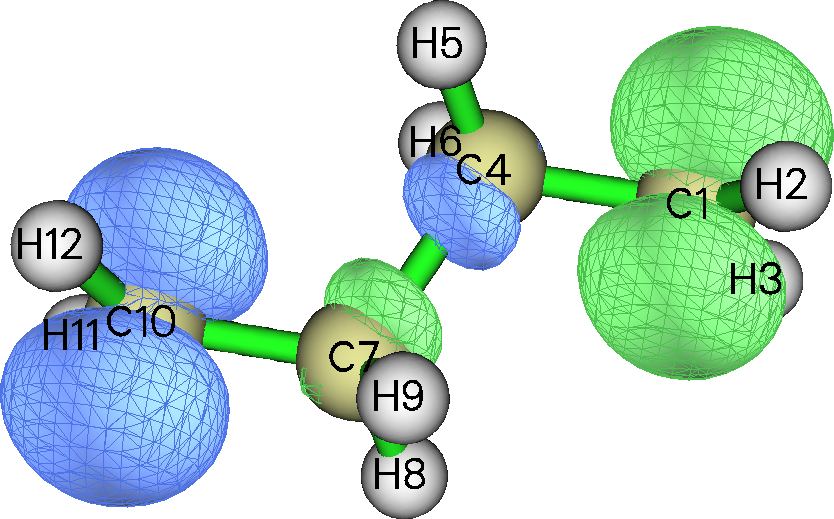
先做流域分析。启动 Multiwfn 并输入
examples\C4H8.wfn
17 // Basin analysis
1 // Generate basins and locate attractors
5 // Spin density
2 // Medium-quality grid
0 // Check the located attractors稍改绘图设置后会看到
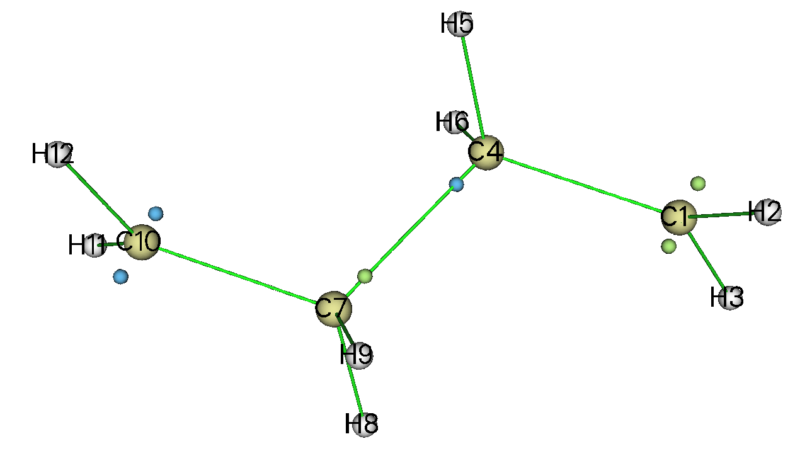
上图中蓝、绿小球分别对应负值部的极小和正值部的极大。显然它们的位置完全符合我们的预期，可从等值面图推断。
关闭 GUI 并输入
-4 // Export attractors as pdb/pqr/txt/gjf file
3 // Export coordinates and function values of all attractors as attractors.txt现在当前目录下有 attractors.txt，其中前三列对应吸引子的 X、Y、Z 坐标 (Bohr)。现在用它们作为自旋密度拓扑分析的起始点。重启 Multiwfn 并输入
examples\C4H8.wfn
2 // Topology analysis
-11 // Reselect the real space function to be studied
5 // Spin density
1 // Search CPs from given starting points
4 // Using starting points from a .txt file
[Press ENTER button] // Use attractors.txt in current folder从屏幕可知 attractors.txt 中的 16 个点依次用作起始点，最终找到 14 个新 CP。再输入 0 返回并选选项 0 可视化 CP，会看到
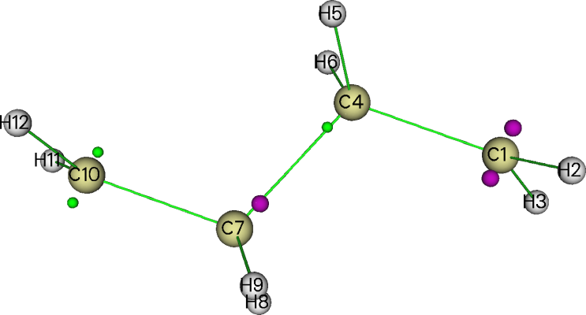
上图中紫色小球即 (3,-3) CP，代表自旋密度正值部的极大；绿点即 (3,+3) CP，对应自旋密度负值部的极小。虽然肉眼很难察觉，但它们的位置确实比流域分析模块直接给出的吸引子更准确。
4.2.8 密度差的拓扑分析：以 H₂O 的变形密度为例
本例进一步说明 Multiwfn 拓扑分析的极强灵活性。展示如何对 H₂O 的变形密度做拓扑分析，即 ρ$_{def}$ = ρ(H₂O) − ρ(H1) − ρ(H2) − ρ(O)。关于变形性质的更多信息见3.7.2 节。类似地，可用同样方法对其他种类的密度差如 Fukui 函数和对偶描述符做拓扑分析。
把“examples”文件夹中的“atomwfn”文件夹移到当前目录，以便 Multiwfn 在生成变形密度时直接利用其中的原子波函数文件。再输入
examples\H2O.fch
5 // Grid data calculation
-2 // Obtain deformation property
1 // Electron density
3 // High-quality grid (grid quality must be fine enough for present purpose. For a much larger system, I suggest choosing “5 Input original point, grid spacings, and the number of points” and input a relatively small grid spacing, e.g. 0.15)
0 // Return to main menu
做流域分析寻找极大极小
17 // Basin analysis module 1 // Generate basins 2 // Use grid data in memory -4 // Export result 3 // Export position of located maxima and minima to attractors.txt in current folder -10 // Return to main menu对变形密度做拓扑分析
iu // Change user-defined function -3 // User-defined function will correspond to interpolation function via B-spline algorithm based on the grid data in memory, as mentioned in Section 2.7 2 // Topology analysis -11 // Change the function to be analyzed 100 // User-defined function 1 // Search CPs from given starting points 4 // Using starting points from a .txt file attractors.txt 0 // Return
现在若进入选项 0，可视化极大极小，即下图中紫色和绿色小球所示的 (3,-3) 和 (3,+3) CP
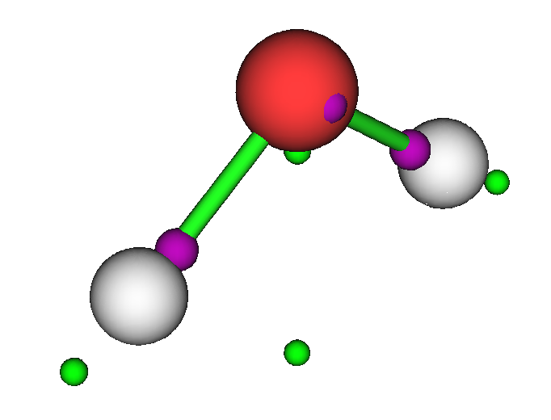
若想对照当前格点数据的等值面比较 CP 位置以确认位置确实正确，可再输入
-10 // Return to main menu
13 // Process grid data
-2 // Visualize isosurface of grid data in memory把等值面值适当调到 0.09 a.u. 并稍调原子和键的半径后，如下所示，可清楚看到绿(正)蓝(负)等值面分别包住了一些极大极小，可见变形密度的极小极大确实被成功找到。
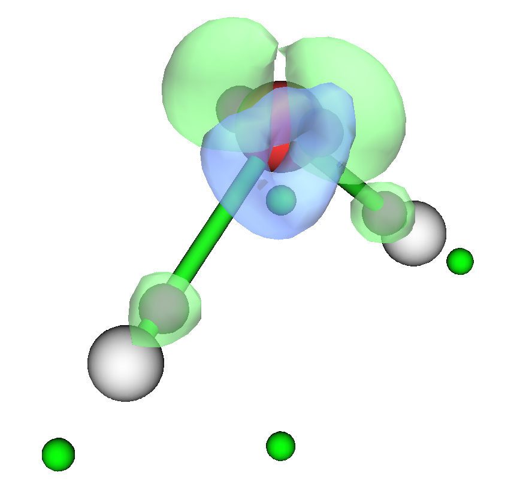
若还需要变形密度的 (3,-1) 和 (3,+1) CP，现在可关闭 GUI 窗口再输入
-1 // Return to main menu
2 // Enter topology analysis module again
6 // Search CPs from a batch of points within sphere(s)
-1 // Start the search using each nucleus as sphere center in turn (I suggest choosing this option several times until no new CPs can be further found)
-9 // Return
8 // Generating the paths connecting (3,-3) and (3,-1) CPs. This step is fully optional, I am just doing a demonstration选项 0 中显示的当前 CP 为
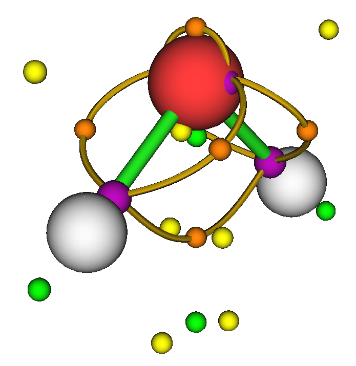
可见基本找到了所有 CP，拓扑路径也正确成功生成。目前 Poincaré-hopf 关系可能满足也可能不满足。对变形密度这类复杂函数，满足该关系绝不重要，只需关注真正感兴趣的 CP。
注
事实上，不借助流域分析模块像本例这样，直接在拓扑分析模块中寻找变形密度的极小极大并非不可能。但若直接经拓扑分析模块的选项 6 搜索变形密度的 CP，由于数值原因和密度差的高度复杂性，一些极小极大很难找到。
4.2.9 静电势 (ESP) 的拓扑分析
注
关于 ESP 拓扑分析的更多信息见我的博客文章：“使用 Multiwfn 对静电势和范德华势做拓扑分析以精确获得它们极小点的位置和数值”http://sobereva.com/645(中文)。
一些论文从拓扑分析角度研究分子 ESP，例子见 J. Comput. Chem., 39, 488 (2017) 和 J. Phys. Chem. A, 123, 10139 (2019)。若已仔细读过4.2.2 节、4.2.7 节和4.2.8 节，自然知道如何用 Multiwfn 实现。但这里我明确给出一些例子，因为涉及一些关键点。通常只有 ESP 的极小即 (3,+3) 型 ESP 临界点值得关注，因为 ESP 极大总是出现在原子核位置，而 (3,-1) 和 (3,+1) 型 ESP 临界点的物理意义不太明显。
寻找 ESP 临界点有三种方法，需按实际情况决定用哪种：
(1) 拓扑分析模块的 Newton 法。可找到各类 ESP 临界点
(2) 拓扑分析模块的最速下降法，只找到 ESP 极小
(3) 组合法，即先用流域分析模块粗略定位 ESP 极小的位置，再用拓扑分析模块精修其坐标，步骤与4.2.7 节和4.2.8 节相同。
若对各类临界点都感兴趣，(1) 必须与随机分布的起始点联用。但若只对 ESP 极小感兴趣，(2) 是更好选择，因为搜索过程不会收敛到其他种类的临界点，因而需要的随机起始点较少。不幸的是，若极小出现在狭窄谷区，(2) 的收敛行为很差，且若起始点数目相对有限，(1) 和 (2) 都不能保证找到所有 ESP 极小；(3) 没有这些问题，只是操作步骤稍多，且流域分析阶段产生的格点数据可能占用大量内存。
下面三部分依次说明三种方法的用法。
(1) 用 Newton 法寻找 ESP 临界点
以乙酸为例说明用 Newton 法寻找 ESP 临界点。
启动 Multiwfn 并输入
examples\acetic_acid.wfn
2 // Topology analysis
-11 // Select real space function
12 // ESP
6 // Search CPs from a batch of points within sphere(s)
11 // Set number of starting points in each sphere
100 // Because searching ESP CPs is quite expensive, we use a relatively small value than default, usually this is adequate
-1 // Start the search using each nucleus as sphere center in turn过一会儿可发现找到一批 CP (注意每次用该搜索模式能获得的 CP 数目有点随机)：
Index Coordinate Type
1 -0.94873432 -0.85713774 -0.00001303 (3,-1)
2 -4.10014831 -1.74269848 -0.00054080 (3,+3)
3 -4.18123989 -0.18759421 -0.00016317 (3,+1)
4 -0.78813608 1.26880944 -0.00011552 (3,-1)
5 -0.58790363 4.51467978 0.00010713 (3,+3)
6 -3.68822894 2.43495579 0.00029260 (3,+3)
7 -2.20123133 4.56852808 0.00030204 (3,+1)
8 1.17777482 0.08729980 -0.00001956 (3,-1)
9 3.17142044 1.10110206 -0.00221974 (3,-1)
10 2.98644302 -0.75061380 -1.06273496 (3,-1)
11 2.98614682 -0.74675779 1.06544103 (3,-1)
Totally find 11 new critical points再选选项 -9 回到上一级界面，选选项 0 可视化找到的 CP，会看到
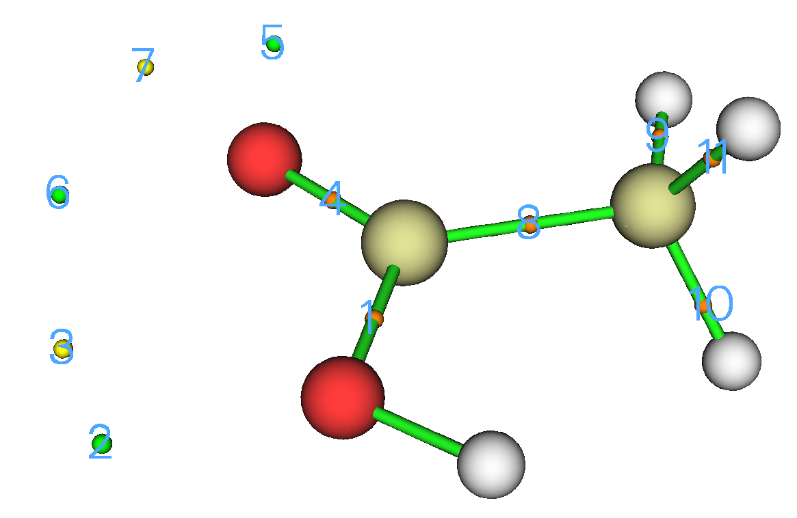
显然 (3,+3) CP 2、5、6 对应 ESP 极小，它们出现主要由于两氧孤对电子对 ESP 的显著负贡献。用选项 7 查看这些点处的 ESP，会发现它们的 ESP 分别为 -1.634、-2.069 和 -2.312 eV。注意选项 7 还给出 ESP 的梯度和 Hessian 信息。
还可把 ESP 等值面与 CP 一起可视化。为此输入以下命令
-10 // Return to main menu
5 // Calculate grid data
12 // ESP
2 // Medium-quality grid
-1 // Show isosurface graph适当调整可视化设置后，ESP = ±0.055 a.u. (±1.497 eV) 的等值面为
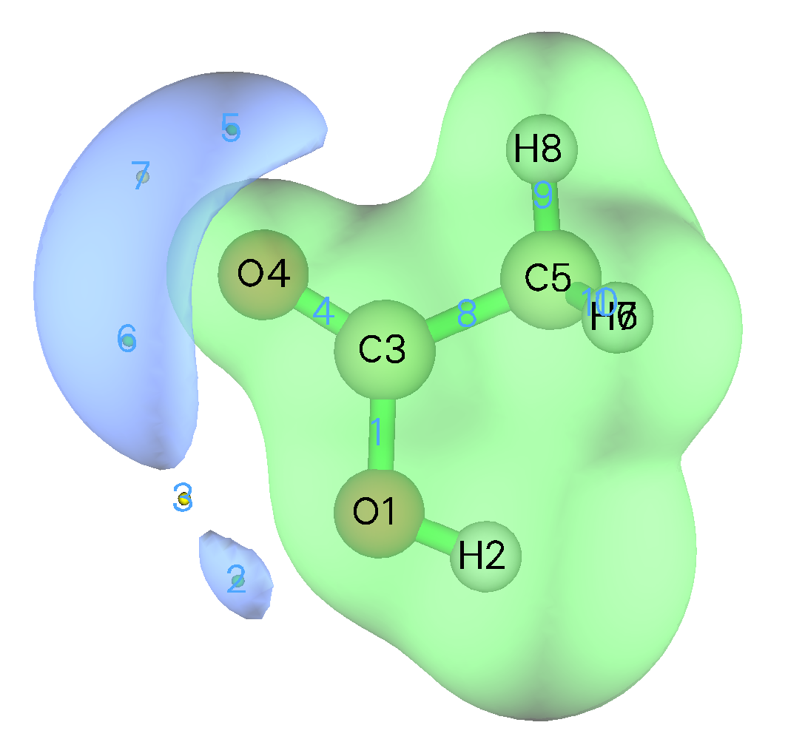
蓝色透明等值面清楚描绘 ESP 明显为负的区域。从图可直观认出 CP 6 必为全局最小，而 CP2 处的 ESP 没那么负。该观察与前面提到的 CP 处精确 ESP 值完全一致。
值得注意的是，原则上用以上方法搜索 ESP 临界点不可能找到全部，至少不可能找到位于原子核位置的 ESP 极大，因为原子核处 ESP 值无穷大且 ESP 梯度不为零。所以 ESP 拓扑分析中无需关心 Poincaré-Hopf 关系是否满足。但若一些感兴趣的 CP 没找到，应反复用选项“-1 Start the search using each nucleus as sphere center in turn”直到找到。若选了很多次后想要的 CP 仍缺失，可考虑把位移和梯度的收敛标准放宽一个数量级(经选项“-1 Set CP searching parameters”中的相应子选项)再重新搜索。
(2) 用最速下降法寻找 ESP 极小
仍以乙酸为例说明用最速下降法寻找 ESP 极小。启动 Multiwfn 并输入
examples\acetic_acid.wfn
2 // Topology analysis
vmin
-1 // Start the search using each nucleus as sphere center in turn会看到找到了三个 (3,+3) CP 即极小，与 Newton 法找到的相同：
Index Coordinate Type
1 -4.10014914 -1.74269856 -0.00049544 (3,+3)
2 -3.68823066 2.43494346 0.00029136 (3,+3)
3 -0.58789573 4.51467533 0.00010994 (3,+3)
Totally find 3 new critical points上面输入的 vmin 是快捷方式，相当于输入以下命令：
2 // Topology analysis
-11 // Select real space function
12 // ESP
-1 // Set CP searching parameters
12 // Choose searching algorithm
4 // Steepest descent
6 // Search CPs from a batch of points within sphere(s)
11 // Set the number of starting points in each sphere
10 // Although 10 starting points per center is small, it is adequate for most cases. Unlike Newton method, all starting points of steepest descent method will converge towards to minima, therefore a smaller number of starting points is needed(3) 用联用法寻找 ESP 极小
二茂铁是最速下降法不适合寻找其 ESP 极小的典型例子，因为如下所示，一些极小出现在 ESP 非常狭窄的谷区，使该方法收敛相当困难。Newton 法此时表现更好，其振荡行为没那么突出；但若希望找到所有 ESP 极小，需设非常多的起始点，使计算代价很高。这里说明流域分析和拓扑分析模块联用以找到所有 ESP 极小，非常适合该体系。顺便一提，ESP 流域分析的详细例子见4.17.3 节，建议先看。
启动 Multiwfn 并输入
examples\ferrocene.mwfn // Wavefunction file of B3LYP/6-31G*&SDD level
17 // Basin analysis
1 // Generate basins
12 // ESP
1 // Low-quality grid. Such quality is adequate for crudely locating extrema purpose (using better quality grid will not bring additional benefits, while computational cost of ESP will increase significantly)计算完成后进入选项 0 可视化 ESP 极值：
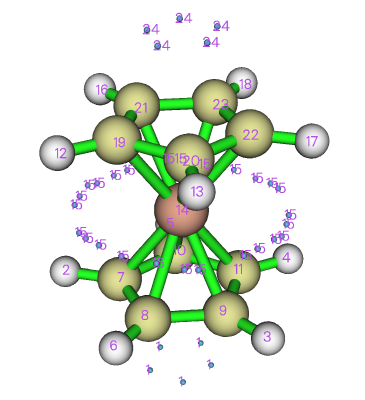
蓝点对应 ESP 极小，而 ESP 极大近似出现在原子核位置，被原子球遮住。
关闭 GUI 窗口并输入以下命令，用拓扑分析模块细化极小的位置
-4 // Export attractors
3 // Export coordinates and function values of all attractors as attractors.txt in current folder
-10 // Return to main menu
2 // Topology analysis
-11 // Select real space function
12 // ESP
1 // Search CPs from given starting points
4 // Using starting points from a .txt file
[Press ENTER button] // Use points recorded in the attractors.txt in current folder然后 Multiwfn 用默认 Newton 法基于 attractors.txt 中的起始点搜索 CP。计算完成后输入 0 返回，再选选项 0 可视化找到的 CP：
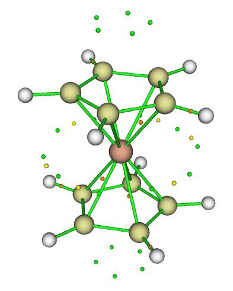
可见 ESP 极小(绿色小球)出现在预期位置，分布符合分子对称性，意味着所有 ESP 极小都已找到。
最后，若想把 ESP 等值面与极小一起可视化以更好理解，可输入
-10 // Return to main menu
13 // Process grid data
-2 // Visualize isosurface for the grid data in memory, which currently corresponds to the ESP grid data generated during using basin analysis module before把等值面值改为 0.025 a.u. 并把等值面设为 mesh 风格后，可以看到
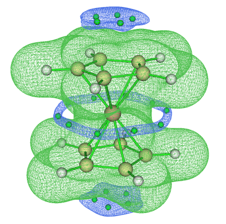
蓝色等值面 (-0.025 a.u.) 来自 cp 配体丰富的 π 电子，预期这些区域有相应的 ESP 极小。二茂铁中部有非常窄的环形等值面，其中有 10 个 ESP 极小。如上所述，此类区域的 ESP 极小很难用最速下降法找到。而若用 Newton 法，除非用非常多的随机起始点，否则不易成功找到全部。
4.2.10 范德华势的拓扑分析
注
关于范德华势拓扑分析的更多信息见我的博客文章：“使用 Multiwfn 对静电势和范德华势做拓扑分析以精确获得它们极小点的位置和数值”http://sobereva.com/645(中文)。
范德华 (van der Waals, vdW) 势是研究以 vdW 效应主导的分子间相互作用相当重要的函数，介绍见3.23.7 节，可视化研究和流域分析的例子见4.20.6 节。本例对 vdW 势做拓扑分析以精确定位其极小，以金刚烷为例。
启动 Multiwfn 并输入
examples\adamantane.xyz
2 // Topology analysis
-11 // Select real space function
25 // vdW potential如屏幕提示所示，寻找 CP 的算法已自动改为最速下降法，因为它最适合寻找 vdW 势的极小。
再输入
6 // Search CPs from a batch of points within sphere(s)
-1 // Start the search using each nucleus as sphere center in turn. Note that currently 100 points are randomly distributed around each atom.从屏幕信息可知找到了 27 个 (3,+3) CP，即 vdW 势的 27 个极小。回到上一级菜单，选选项 0 可视化极小。把“Ratio of atomic size”改为 4.0 (此时原子半径对应 vdW 半径) 并把“Ratio of CP size”增至 2.0 后，会看到下图。极小的分布符合分子点群对称性 (Td)，意味着所有极小都已成功找到。
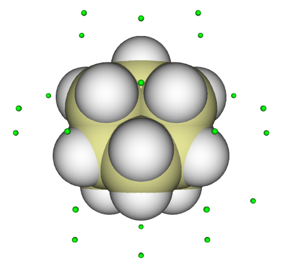
接下来可用选项 7 查看这些 vdW 极小处的 vdW 势值。
然后可回到主菜单，用4.20.6 节所述方法可视化 vdW 势等值面，等值面和极小会一同显示。下图的蓝色等值面对应 -0.62 kcal/mol 的 vdW 势。显然极小的分布与等值面一致。
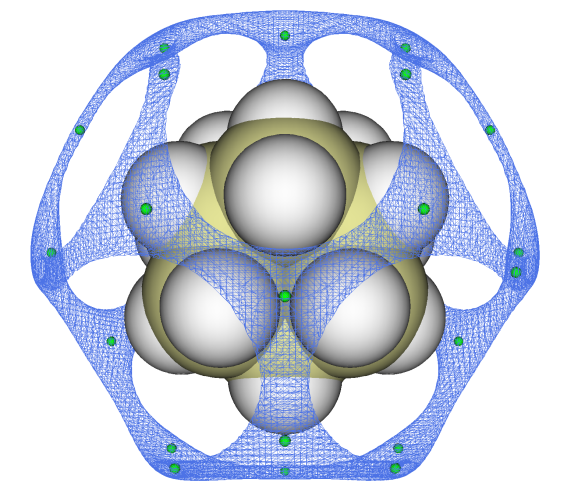
4.2.11 相互作用区指示剂 (IRI) 和约化密度梯度 (RDG) 的拓扑分析
Chemistry-Methods, 1, 231 (2021) DOI: 10.1002/cmtd.202100007 提出的相互作用区指示剂 (interaction region indicator, IRI) 是揭示化学体系中各类相互作用的极有用方法，包括化学键和弱相互作用。通常 IRI 分析通过绘制 IRI 函数的 sign(λ₂)ρ 着色等值面图进行，例子见4.20.4 节。IRI 等值面的出现必伴随相应的 IRI 极小，因此可把 IRI 极小视为相互作用区内最具代表性的位置，其性质可用于表征相互作用的类型和强度。注意，IRI 极小的分析绝不等同于分子中的原子 (AIM) 理论中电子密度的拓扑分析。如 Chemistry-Methods, 1, 231 (2021) 仔细讨论的，IRI 也能忠实揭示不存在 AIM 临界点的明显相互作用，例如一些分子内氢键。因此，若希望通过考察代表点处实空间函数的值研究这类氢键，应先找到相应的 IRI 极小，如下所示。也可用完全相同的步骤寻找约化密度梯度 (reduced density gradient, RDG) 的极小，RDG 被所谓 NCI 方法用于揭示弱相互作用区(介绍见3.23.1 节)。虽然 RDG 揭示非共价相互作用的能力与 IRI 很相似，但遗憾的是它不像 IRI 那样能揭示有强共价特征的相互作用。
接下来以 Ni(NH₃)₂(OH)₂ 为例展示如何精确定位 IRI 极小，其波函数文件 examples\Ni(NH3)2(OH)2.mwfn 由 B3LYP 结合对 Ni 的 SDD、对其他原子的 6-311G** 产生。如 Chemistry-Methods, 1, 231 (2021) 仔细分析的，该体系有两个明显的配体间 N-H⋅⋅⋅O 氢键。若用4.2.1 节所述同样方法做 AIM 拓扑分析，会发现找不到对应两氢键的键临界点。但氢键的存在可被 IRI 清楚展示。
启动 Multiwfn 并输入
examples\Ni(NH3)2(OH)2.mwfn
2 // Topology analysis
-11 // Select real space function
24 // Interaction region indicator (IRI)此时如屏幕提示所示，CP 搜索方法已从默认 Newton 法自动改为最速下降法，因为 Newton 法很难收敛到一些 IRI 极小，不仅因为它们常出现在非常小而窄的凹区，还因为这些极小周围局域不表现二次行为(可绘制 IRI 的曲线图直观理解这点)。此时最速下降比 Newton 法合适得多。从屏幕提示还可知梯度收敛标准已自动设为非常大的值以使其在判断收敛时不起作用，因为由于 IRI (和 RDG) 特殊的函数行为，用最速下降法收敛到梯度足够小的位置几乎不可能非常精确。
再输入以下命令开始搜索 CP
6 // Search CPs from a batch of points within sphere(s)
-1 // Start the search using each nucleus as sphere center in turn过一会儿会发现找到了大量 (3,+3) CP 即极小。注意与能找各类 CP 的默认 Newton 法不同，这里用的最速下降法只找极小。再输入 0 回到上一级菜单，选选项 0 可视化结果，会看到
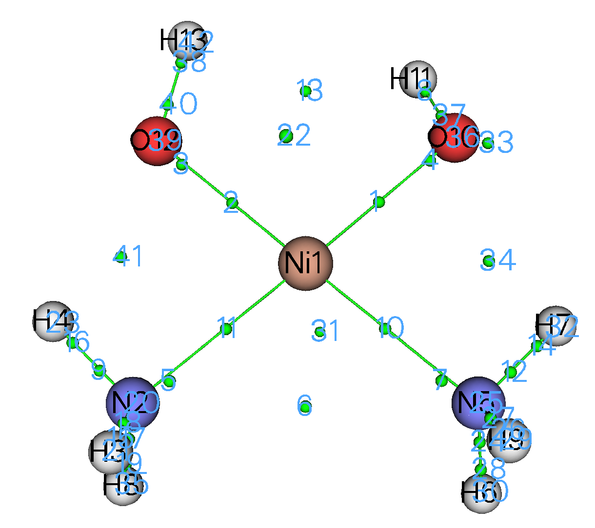
上图中的绿色小球对应 IRI 极小，可见它们出现在每对相互作用原子之间，CP34 和 CP41 对应配体间 N-H⋅⋅⋅O 氢键。请对照着色 IRI 等值面图比较它们的位置，即 Chemistry-Methods, 1, 231 (2021) 的图 5(b)。显然随后可用选项 7 研究两 CP 的性质以尝试讨论氢键的特征。有两个 CP (22 和 31) 离分子很远(需适当旋转分子才能清楚看到它们的位置)，它们没有任何实际意义，直接忽略即可。
若有兴趣，也可在 XY 平面绘制 IRI 填色图，该体系非氢原子几乎都在该平面内。为此回到主菜单，再输入
4 // Output and plot specific property in a plane
24 // Interaction region indicator (IRI)
1 // Color-filled map
[Press ENTER button] // Use default number of grids
0 // Set extension distance
1 // 1 Bohr
1 // XY plane
0 // Z=0关闭图形，稍改绘图设置
4 // Enable showing atom labels and reference point
1 // Red
5 // Set details of plotting critical points and paths
15 // Set color for CPs
4 // (3,+3)
10 // Magenta
0 // Return
-1 // Show the graph again现在可以看到
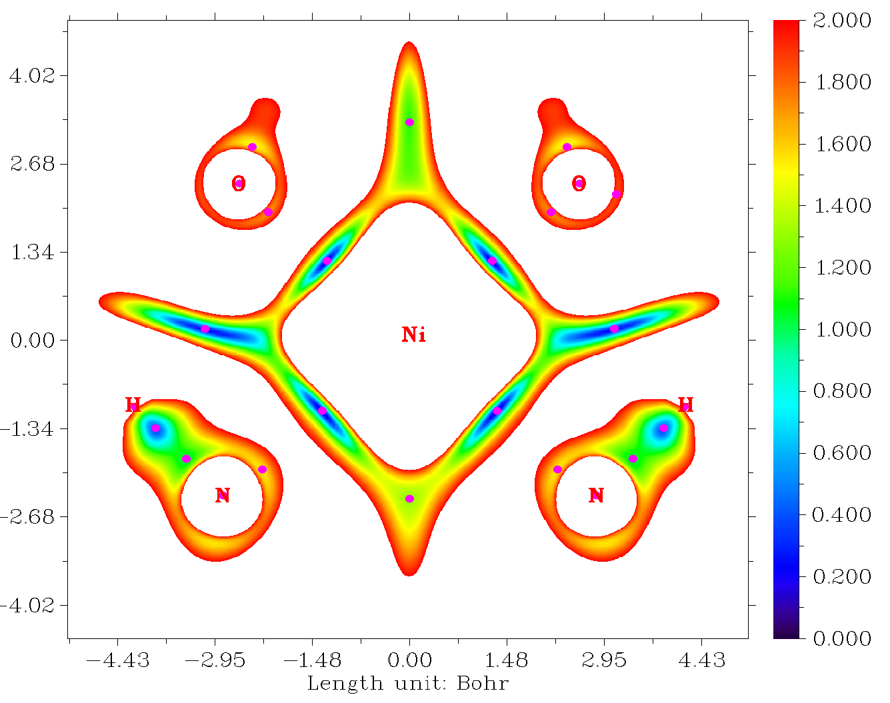
可见相邻原子间明显的相互作用区被相对较低的 IRI 值清楚揭示，绘制的 IRI 函数的极小(图中的紫点)确实出现在预期的位置。